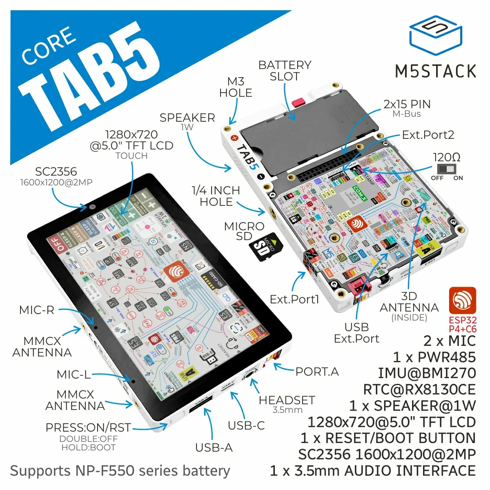

Tab5
M5Stack · M5Stack Tab5 – ESP32-P4 5" 1280×720 MIPI-DSI tablet with ESP32-C6 Wi-Fi 6
Tab5 is a 5.0" 1280x720 IPS Capacitive touch ESP32 display board by M5Stack based on the ESP32-P4 with 16MB flash, 32MB Octal PSRAM.
Features, ports & interfaces
- MIPI-DSI display
- Capacitive touch (GT911 / ST7123 / ST7121)
- 32 MB PSRAM – Octal
- 16 MB flash
- microSD (TF) card slot
- Wi-Fi 6 (802.11ax, 2.4 GHz) via ESP32-C6 co-processor – version from the ESP32-C6 datasheet
- Bluetooth 5.3 (LE) via ESP32-C6 co-processor – version from the ESP32-C6 datasheet
- Thread (802.15.4) – IEEE 802.15.4 radio of the ESP32-C6 co-processor – SoC capability per the Espressif datasheet; needs firmware support
- Zigbee (802.15.4) – IEEE 802.15.4 radio of the ESP32-C6 co-processor – SoC capability per the Espressif datasheet; needs firmware support
- Matter-capable radio (Wi-Fi / Thread) – ESP32-C6 co-processor capability per the Espressif datasheet; firmware-dependent
- USB-C
- USB-A host
- RS-485
- Grove port: HY2.0-4P
- Speaker: 1 W @ 8 Ω, NS4150B
- Microphone: Dual microphone (AEC)
- 3.5 mm headphone jack
- Camera: SC2356 2 MP, MIPI-CSI
- Battery: NP-F550 7.4 V 2000 mAh (removable)
- Battery charger: IP2326
- DC input: 6–24 V via RS-485 port
- RTC: RX8130CE
- IMU: BMI270
- Buttons: Power, Reset/Boot
Specifications
| Parameter | Value | Source |
|---|---|---|
| Screen size | 5.0" | source |
| Resolution | 1280x720 | source |
| Panel | IPS | source |
| Shape | Rectangular | |
| Display interface | MIPI-DSI | source |
| Display driver | ILI9881C / ST7123 / ST7121 | source |
| Touch | Capacitive | source |
| Touch controller | GT911 / ST7123 / ST7121 | source |
| MCU / SoC | ESP32-P4NRW32 (dual-core RISC-V 360 MHz + LP core 40 MHz) | source |
| MCU family | ESP32-P4 | source |
| Co-processor | ESP32-C6-MINI-1U | source |
| CPU frequency | 360 MHz | source |
| Flash | 16MB | source |
| PSRAM | 32MB Octal | source |
| Wi-Fi | 2.4 GHz Wi-Fi 6, Thread, Zigbee (ESP32-C6) | source |
| Bluetooth | Bluetooth LE (ESP32-C6 co-processor) | source |
| USB | USB Type-A (Host), USB Type-C (USB 2.0 device, charging) | source |
| SKU | C145 / K145 | source |
| Category | M5Stack (all-in-one controllers) | |
| Audio | ES8388 codec + ES7210 AEC front end | source |
| Battery | NP-F550 7.4 V 2000 mAh (removable) | source |
| Buttons | Power, Reset/Boot | source |
| Camera | SC2356 2 MP, MIPI-CSI | source |
| Battery charger | IP2326 | source |
| DC input | 6–24 V via RS-485 port | source |
| Dimensions | 128.0 x 80.0 x 12.0 mm | source |
| Grove / HY2.0 port | HY2.0-4P | source |
| IMU | BMI270 | source |
| Audio jack | 3.5 mm headphone jack | source |
| Microphone | Dual microphone (AEC) | source |
| RS-485 | SIT3088, switchable 120 Ω terminator (HC1.25-6P) | source |
| RTC | RX8130CE | source |
| SD / TF | microSD | source |
| Speaker interface | 1 W @ 8 Ω, NS4150B | source |
| Vendor | M5Stack |
Official links & documentation
Files
Offline copies are available on the interactive page.
- Tab5_Schematics_PDF.pdf – original